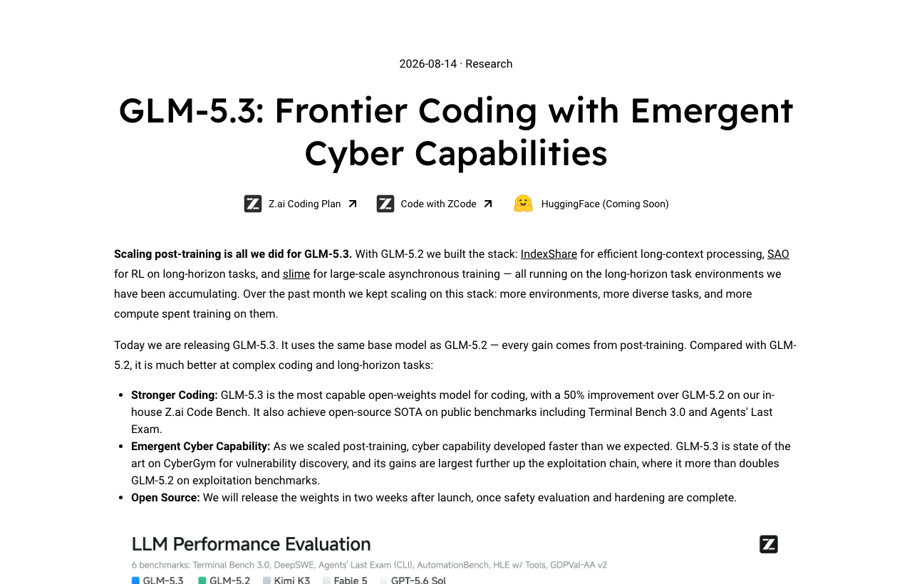

05 z.ai 게시일 2026.08.14
Z.ai, GLM-5.3 성능 개선 배경 공개

이번 공개는 새 모델 자체보다 성능 개선 방식에 시선이 모였다. 관련 보도는 Z.ai가 기반 모델을 다시 학습하지 않았다고 전했다. 대신 코딩과 장기 작업 성능이 좋아졌다는 점을 함께 다뤘다.
핵심 브리핑
Z.ai는 GLM-5.3을 소개했다. 이번 발표의 초점은 코딩과 장기 작업 성능이다. 관련 보도는 기반 모델을 다시 학습하지 않았다고 전했다. 성능 개선이 어디서 나왔는지가 핵심 질문으로 떠올랐다. 공개 발췌에는 모델 크기와 라이선스 정보가 없다. 가격과 배포 조건도 확인되지 않았다.
맥락 읽기
이 사례는 오픈 모델 경쟁의 관심사가 바뀌고 있음을 보여준다. 이제는 더 큰 모델을 새로 학습하는 일만 경쟁력이 아니다. 운영 환경과 후처리, 데이터 구성, 추론 설계가 성능 차이를 만들 수 있다. 코딩과 장기 작업처럼 평가가 까다로운 영역에서는 이런 차이가 더 크게 드러난다.
업계의 움직임
여러 매체가 함께 다룬 사건이다. MarkTechPost와 The New Stack은 기반 모델을 다시 학습하지 않았는데도 성능이 좋아진 배경에 초점을 맞췄다. Reddit r/LocalLLaMA에서도 주간 상위로 올라 커뮤니티 관심이 확인됐다.
시사점과 체크포인트
우리 회사가 볼 지점은 모델 교체 비용이다. 기반 모델을 바꾸지 않고 성능을 높일 수 있다면 검증 범위를 줄일 수 있다. 반면 개선 방식이 비공개면 재현성과 통제 가능성은 떨어질 수 있다.
- 검토 팀: AI플랫폼, 정보보호, 아키텍처, 현업 PoC 조직
- 확인 질문: 성능 개선이 프롬프트, 툴 호출, 추론 설정 중 어디에서 나왔는가
- 확인 질문: 사내 문서 처리와 코딩 보조에서 같은 개선이 재현되는가
- 선행 과제: 기존 모델 대비 평가 항목을 코딩 정확도와 장기 작업 완주율로 분리해 측정
- 주의점: 공개 발췌에는 스펙과 라이선스, 가격 정보가 없다
주요 용어
원문 정보
제목: GLM-5.3: Frontier coding with emergent cyber capabilities
게시일: 2026.08.14
출처 URL: https://z.ai/blog/glm-5.3